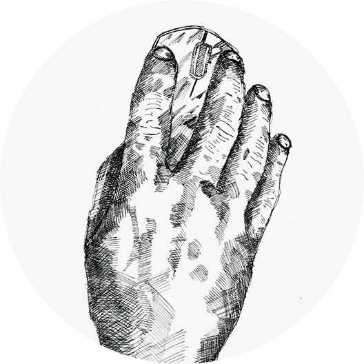

about

I'm now strangely over 20 years deep working as a professional freelance designer. Mostly within the realms of ux ui, product, digital and video. Now more than ever the ground underneath this role is constantly moving, shifting, dramatically changing shape and form. One constant of my experience with digital design, has been the never ending morphing landscape concerning job titles, expectations, and software adoption.
Over a number of years much of my experience has focused and revolved around e-commerce, augmented reality experiences, and b2b solutions. I've been luckily enough to have had design opportunities in most industries over the course of my extensive creative commercial life from finance, hospitality, sports, travel, fashion, music and retail.